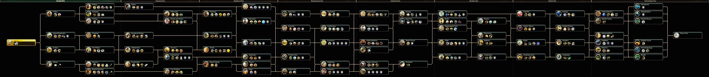

Geschiedenis, dat leer je uit boeken. Het is de heersende opvatting onder menig volwassene. Urenlang uit een boek feiten stampen voor een tentamen om ze daarna in luttele seconden te vergeten. Op scholen is dat tegenwoordig de norm. Diagnostische toetsen, voorbereidende examens en vervolgens toetsen over toetsen. Het houdt niet op, de druk is enorm, en menig hersenpan staat op overkoken.
Maar die serieuze manier van leren, dat kan veel anders. Om het vuur te laten branden zonder dat de boel overkookt, kunnen videogames helpen. Van Romeinse veldslagen tot en met een VOC-schip besturen en van een stad regeren tot en met een beschaving creëren. Videogames kunnen grenzeloos omgaan met het verleden. Videogames zijn de toekomst over het verleden.
Ook Sid Meier's Civilization V (uitgebracht in 2012), een speelbare geschiedenis van de mensheid doordrenkt met een Westers sausje, gebruikt het verleden om een succesvolle strategische spellenreeks te ontwikkelen.
Civilization heeft veel naties en groepen van over de gehele aardkloot en van allerlei perioden door elkaar gehusseld. Zo wordt ons koude kikkerlandje vertegenwoordigd door Willem van Oranje terwijl de Fransen Napoleon Bonaparte aan hun zijde hebben. Ook de Ethiopiërs, de Romeinen, Zoeloes en de Azteken zijn van de partij. Het lijkt misschien een anachronistisch allegaartje, is het ook! Maar omdat Civilization op deze manier onverwachte verbanden weet te leggen tussen verschillende historische figuren en tijdperken, prikkelt het spel juist de historische sensatie. Spelenderwijs word je uitgedaagd op zoek te gaan naar de dwarsverbanden die de essentie vormen van de geschiedenis: het bal van botsende beschavingen.
Een rijk opbouwen vanaf de nomadische tijd en ook nog eens zien te overleven tegen andere hongerige hyena’s. Dat is geen gemakkelijke opgave, maar tegelijkertijd ook niet onmogelijk. Gelukkig biedt Civilization vele strategieën om uiteindelijk de overwinning op te kunnen eisen. Wil je je tegenstanders platwalsen door middel van oorlog? Check. Wil je met iedereen vrienden zijn en via de Verenigde Naties een diplomatieke overwinning opeisen? Check. Wil je technologisch superieur zijn en als eerste de space race winnen? Check.
Technologieën zorgen voor doorstroming van de nomaden naar de huidige tijd. Nieuwe technologie betekent nieuwe eenheden en nieuwe gebouwen. Het is een spelende vorm van ‘Survival of the fittest.’ Zo verandert het slagveld langzaam van katapulten en zwaarden naar musketten en raketten. De sleutel tot succes ligt in jouw handen.
Het spel heeft een eigen encyclopedie ingebouwd, waarmee je extra achtergrondinformatie kan opzoeken. Civilization biedt niet alleen plezier, maar geeft ook op een korte, krachtige en gekleurde manier uitleg voor elk aanwezig spelelement.
Videogames gaan hand in hand met plezier, maar ook met geschiedenis. Geschiedenis is een verhaal dat geschreven is door historici. In videogames gaat geschiedenis geschreven worden. Durf jij het verleden naar je hand te zetten? Dan ben je van harte uitgenodigd voor het bal van botsende beschavingen in Sid Meier's Civilization V.
Voor dit project komen de disciplines